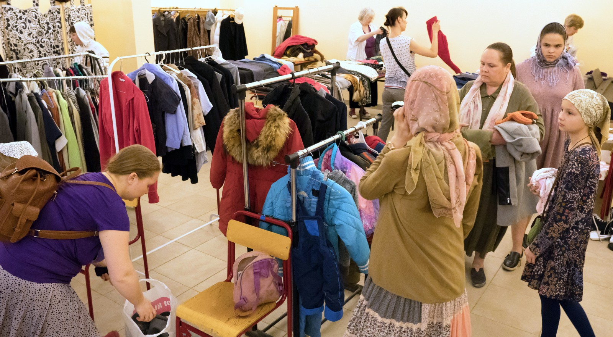
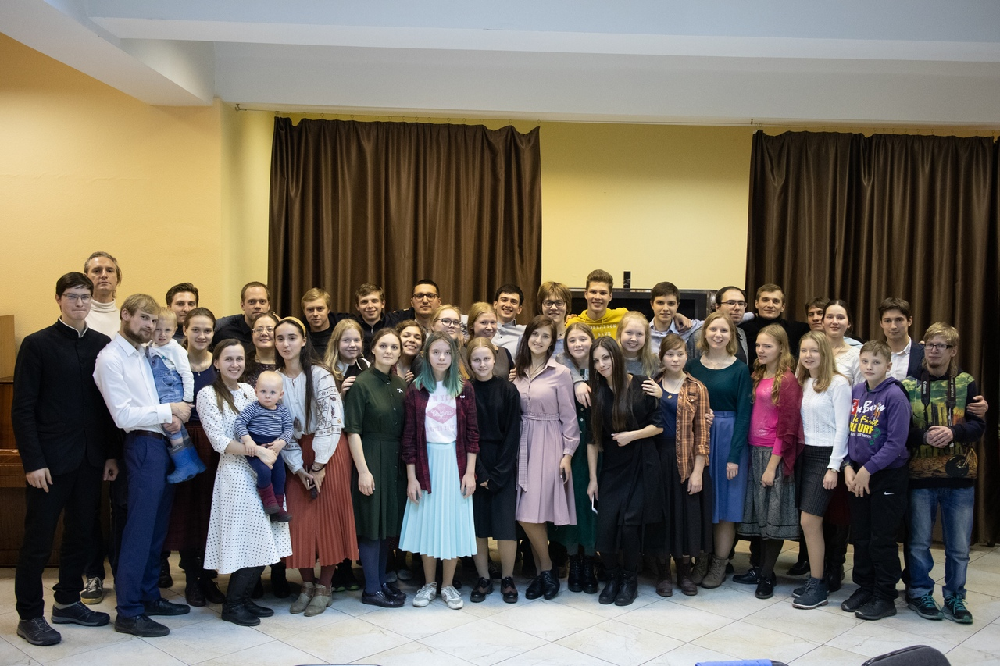

Социальная служба
Продолжается сбор помощи многодетным семьям
Одежду, продукты и школьные принадлежности можно принести по воскресеньям после поздней литургии.
Что сейчас необходимо
Расписание служб, подготовка к Причастию и всё необходимое для первого посещения.
ПрочитатьВажные объявления получают собственное место и срок показа. Они не зависят от даты последней новости.

Одежду, продукты и школьные принадлежности можно принести по воскресеньям после поздней литургии.
Что сейчас необходимо
Молодёжные встречи, социальное служение, воскресная школа, паломничества и общие праздники.
Все направления